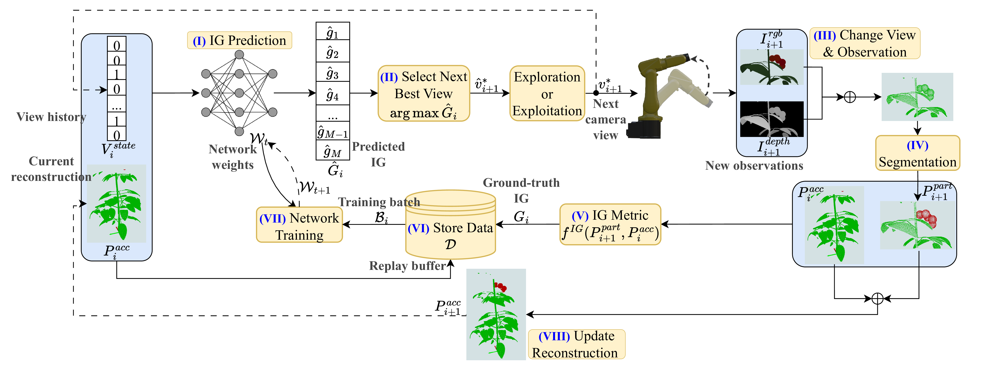
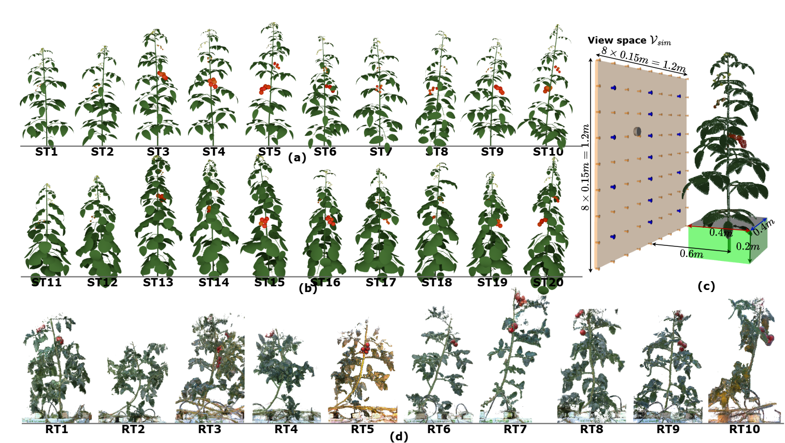
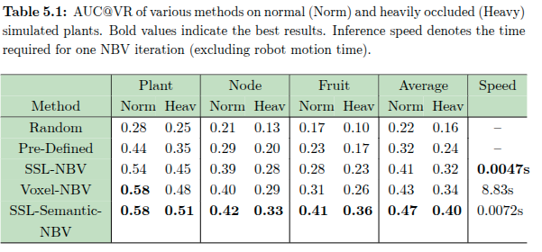
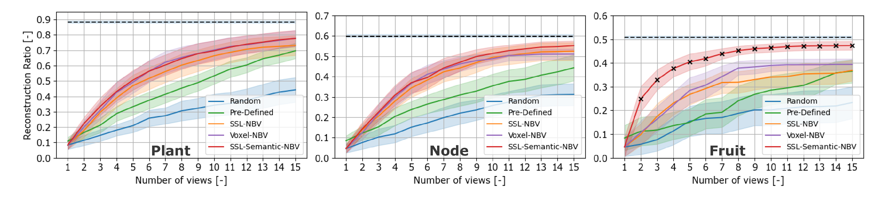
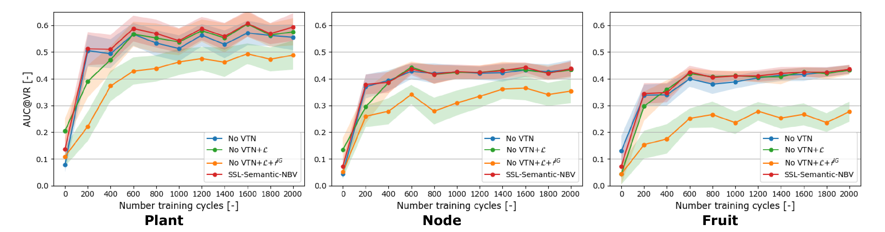
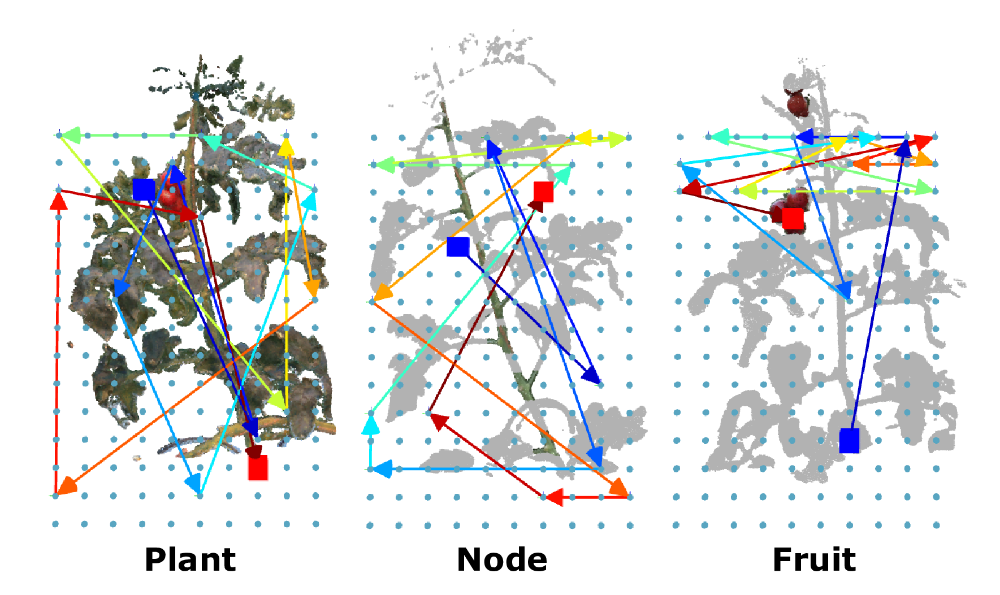
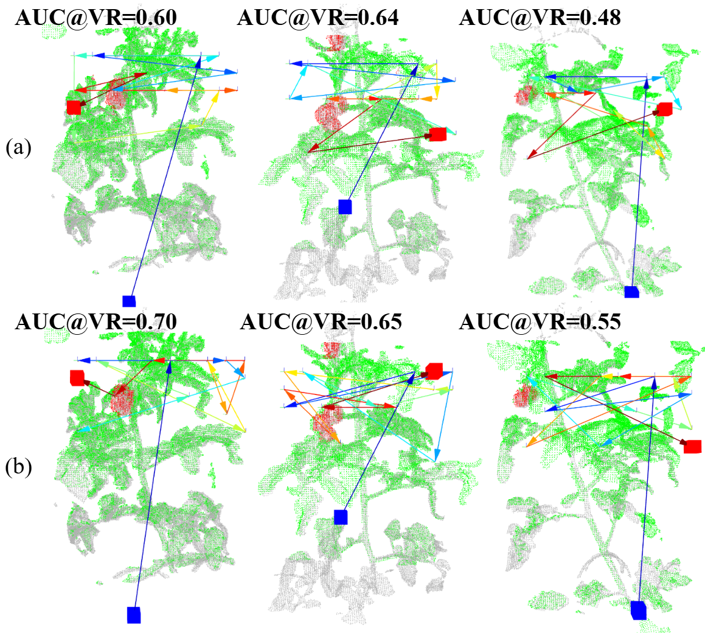

This is the main generated presentation demo and is intentionally placed at the top for immediate viewing.
The framework performs iterative, target-aware next-best-view planning with self-supervised learning. At each iteration, the model predicts information gain (IG), selects a new camera pose, collects and segments observations, computes training supervision, and updates both replay buffer and reconstruction.

Fig. 1: Self-supervised learning workflow for one NBV iteration.
The simulation study evaluates reconstruction efficiency for plant, node, and fruit targets under both normal and heavy occlusion settings, together with ablation analysis of the proposed components.

Fig. 3: Digital plant setup for simulation experiments.

Fig. 4: Quantitative simulation performance under normal and heavy occlusions.

Fig. 5: Qualitative differences among planners across targets.

Fig. 6: Ablation on IG metric, VTN, and training loss.
Simulation demo: Target-aware NBV behavior in simulation (highlighted as key result).
Real-world experiments evaluate whether the policy transfers beyond simulation and whether SAM3-based segmentation can support practical target-aware NBV without exhaustive manual labels.
Real-world demo: SSL-Semantic-NBV behavior on greenhouse tomato plants (highlighted as key result).

Fig. 7: Qualitative target-aware trajectory behavior on real plants.

Fig. 8: SAM3-based segmentation compared to ground-truth segmentation settings.